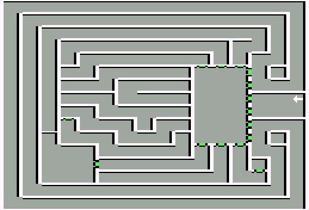

Castle Pinehurst
| X | Y | Event |
| 14 | 10 | Find my mirror image and you will find the way out |
| 2 | 0 | Lose a year |
| 2 | 8 | To win the Queen's Triple Crown, take a Black ticket to The Arena, Monster Bowl, and Colesseum. After victory has been achieved, return for your reward. |
| 7 | 6 | J-26 Fluxer |
| 4 | 3 | Lord Peabody |
| 2 | 5 | The wayback machine |
| 11 | 2 | Stairs to dungeon |
| 13 | 3 | Yellow Bishop |